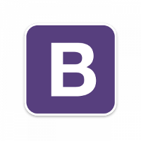
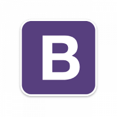
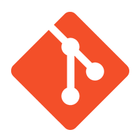
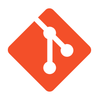
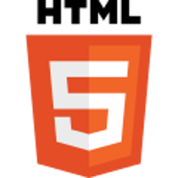
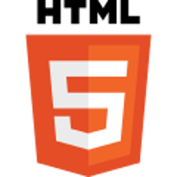

My experiences in scientific fields and social services have taught me how to cooperate and collaborate. I’ve also learned the value of working with people who may think differently from me.
My natural inclination toward organization has served me well over the course of my academic studies and professional career. I always examine and thoroughly plan out solutions before I apply them, an approach which I have found to be useful regardless of the issue at hand.
Thanks to my background in chemistry and computer science, I have developed strong analytical and investigative skills. My education and work in the STEM arena has prepared me to successfully solve any problem I come across.
I began in Day Cohort 14 at Nashville Software School in May 2016. Returning to software development was a priority for me, and NSS proved to be a great place to do this. I learned much more than just CSS, HTML, and Javascript; the tools and techniques I’ve acquired throughout my study at NSS have helped me become a stronger developer and a better teammate. The most rewarding part of the program was organizing and assisting my classmates during group projects.
Once my VISTA contract ended, I joined Park Center in Nashville, Tennessee as a Peer Specialist. I primarily worked with members who lived in the agency’s subsidized housing for people with mental illness. While at Park Center, I gained a greater appreciation for teamwork and social services, and I would like to continue making contributions to the mental health field with my technical skills.
I took a break from my STEM studies to do a year of service with the Americorps VISTA program in 2014. My project was designed to refine Nashville’s system for providing existing services to people experiencing homelessness, and I worked on a multi-agency collaboration that spanned both city government and nonprofit organizations to streamline this process.
In August 2012 I started a Master’s program in computer science at Middle Tennessee State University. While studying there, I gained a strong theoretical background in software development and learned C/C++. Assembly language was one of my favorite classes, because it taught me to analyze every minute detail of even the simplest problems.
I graduated from Rhodes College in Memphis, Tennessee with a Bachelor of Science in 2012. Although I majored in chemistry, I’m also very passionate about film and feminism, so I fit as many gender studies and film studies classes into my schedule as I could.


 


 

 
